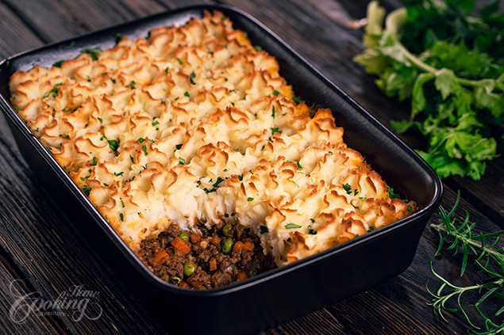

Irish Shepherd's Pie

Description
The perfect dish for those celebrating St. Patrick's Day!
A traditional Shepherd's Pie using lamb and Irish cheese for that authentic Irish taste!
So good that when it's gone you'll say to yourself; "I-rish I had more!".